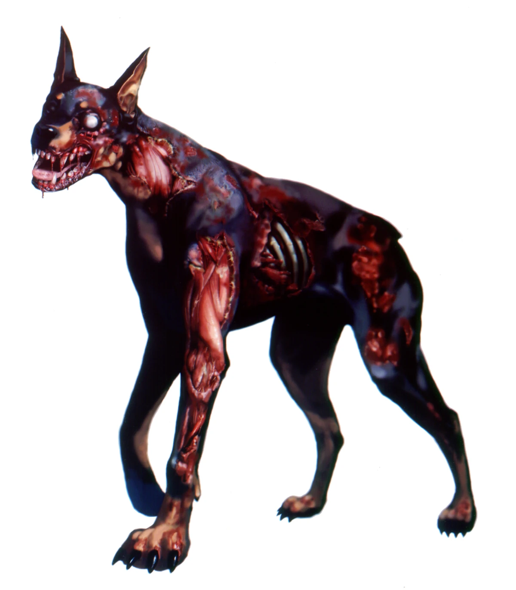
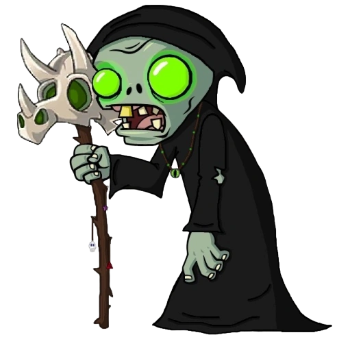

Zombies
Descrição
Os zumbis são os principais antagonistas do jogo, com variações tanto em aparência quanto em comportamento. Apesar dessas diferenças, todos os zumbis compartilham um traço comum: eles só atacam durante a noite.
Comportamento Base
Apesar de existir vários tipos de zumbis, todos eles seguem uma comportamento base parecido, eles atacam prioritariamente o núcleo da fábrica, porém podem atacar o jogador ou construções que estejam em seu caminho também.
Comportamento de ataque
Os zumbis sempre buscam um alvo seguindo as seguintes regras:
- N√∫cleo da F√°brica: Caso o zumbi n√£o tenha nenhum alvo, ele se direcionara para o n√∫cleo da f√°brica tentando destruir ele.
- Jogador: Se o jogador estive a uma determinada distância mínima de um zumbi, ele priorizara atacar o jogador, porém se o jogador se afastar muito do zumbi, ele buscara por outro alvo.
- Torres e construções: Caso o zumbi não esteja perseguindo o jogador e chegue perto de uma torre ou alguma construção da fábrica, ele focara nessa torre, até que destrua a torre, morra, ou seja atraído pelo jogador.
Embora existam diversos tipos de zumbis, todos seguem um padrão de comportamento semelhante. Seu objetivo principal é atacar o núcleo da fábrica, mas eles também podem atacar o jogador ou construções que estejam em seu caminho.
Regras de ataque: Os zumbis sempre escolhem um alvo com base na seguinte hierarquia:
- N√∫cleo da F√°brica
- Se o zumbi não tiver outro alvo, ele se dirigirá ao núcleo da fábrica, tentando destruí-lo.
- Jogador
- Se o jogador estiver a uma distância mínima do zumbi, ele será priorizado como alvo. No entanto, caso o jogador se afaste muito, o zumbi buscará outro objetivo.
- Torres e Construções
- Se o zumbi não estiver perseguindo o jogador e se aproximar de uma torre ou construção da fábrica, ele focará nesse alvo. O ataque continuará até que a torre ou construção seja destruída, o zumbi seja eliminado ou o jogador o atraia para outro local.
Atributos
- Visual: Cada zumbi possui uma aparência única que reflete sua função no jogo. Por exemplo, zumbis "tanks" são grandes e robustos, transmitindo força e resistência.
- Descrição: A descrição fornece detalhes sobre o zumbi e seu comportamento no jogo. Por exemplo, o zumbi comum é fraco individualmente, mas pode se tornar uma ameaça significativa em grandes números.
- Vida: Representa o valor m√°ximo de vida do zumbi.
- Velocidade de Movimento: Define a rapidez com que o zumbi se desloca.
- Dano: Indica o dano causado pelo zumbi tanto ao jogador quanto às construções por ataque.
Classes de Zombies
Jardim Esquecido
| Zombie | Visual | Descrição | |||
|---|---|---|---|---|---|
| Comum |  | Um inimigo básico com ataque direto e pouca resistência. Ótimo para o jogador aprender os fundamentos do combate. No entanto, em grandes quantidades, pode se tornar uma ameaça significativa. | 100 | 20 | 20 |
| Blindado |  | Revestido por uma armadura resistente, este zumbi recebe menos dano, exigindo armas mais fortes ou estratégias específicas para ser derrotado. | 300 | 20 | 20 |
| Explosivo | Ao ser eliminado, explode, causando dano em área. Pode ser usado de forma estratégica para atingir outros inimigos ou destruir construções. | 150 | 20 | 10 | |
| Ágil |  | Zumbis em forma de cães, extremamente rápidos e difíceis de acertar. Representam um grande desafio para a precisão e reflexos do jogador. | 50 | 50 | 20 |
| Planta Cospidora | Uma planta mutante que cospe projéteis venenosos contra o jogador, servindo como um inimigo de longo alcance. | 70 | 10 | 20 | |
| Venenoso | Ao ser eliminado, libera uma nuvem tóxica que envenena o jogador e causa dano a construções próximas. | 70 | 30 | 20 | |
| Enraizado | Movimenta-se lentamente, mas pode lançar raízes para prender o jogador temporariamente, tornando-o vulnerável a outros ataques. | 150 | 10 | 20 | |
| Gigante | Uma criatura imensa e extremamente resistente, capaz de causar grandes danos. Exige planejamento e poder de fogo para ser derrotado. | 500 | 10 | 50 | |
| Lamacento | Uma massa disforme de lama, com olhos brilhantes e um corpo quase líquido. Move-se de forma lenta e ao ser derrotado se divide em 2 versões menores de si mesmo. | 300 | 20 | 40 | |
| Minerador | Zombie que era minerador em vida, usa um picareta e surge do ch√£o em locais inesperados. | 50 | 40 | 20 |
{kind=link}
{kind=link}
{kind=link}
{kind=link}
{kind=link}
{kind=link}
{kind=link}
{kind=link}
Cemitério dos Perdidos
| Zombie | Visual | Descrição | |||
|---|---|---|---|---|---|
| Comum | | O mesmo do Jardim Esquecido. (Presente nos dois cen√°rios) | 100 | 20 | 20 |
| Translucido | Quase invisível à distância, dificultando sua detecção. Possui alta resistência a projéteis, mas é vulnerável a ataques corpo a corpo. | 100 | 50 | 20 | |
| Gélido | Emerge de tumbas congeladas e dispara projéteis que reduzem a velocidade do jogador e das torres ao acertá-los. | 100 | 30 | 20 | |
| Partido | Ao ser derrotado, seu corpo se divide em duas partes independentes: pernas e dorso, forçando o jogador a eliminá-las separadamente. | 100 | 50 | 40 | |
| Regenerativo | Ao morrer, transforma-se em um monte de carne no chão. Se não for destruído rapidamente, ele se regenera e volta a atacar. | 200 | 20 | 30 | |
| Carniçal | Caça e devora zumbis comuns, tornando-se progressivamente mais forte a cada inimigo consumido. | 100 | 20 | 20 | |
| Executor | Armado com uma death machine gun, é um zumbi extremamente perigoso, capaz de disparar rajadas de tiros pesados contra o jogador. | 700 | 10 | 30 | |
| Necromante |  | Zombie que tem a habilidade de spawnar outros zombies comuns. | 75 | 50 | 0 |
| Cavaleiro | Zombie poderoso com uma espada e escudo que pode defletir disparos. | 1000 | 20 | 50 |
{kind=link}
{kind=link}
{kind=link}
{kind=link}
{kind=link}
{kind=link}
{kind=link}
{kind=link}
{kind=link}